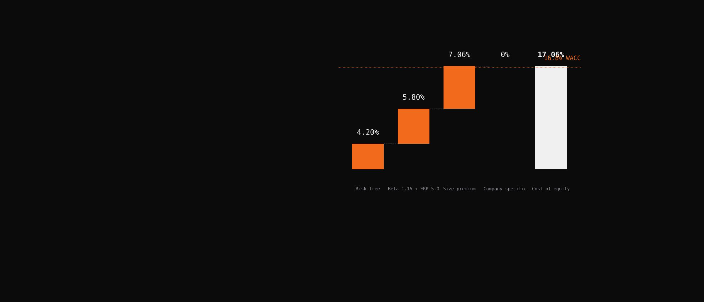
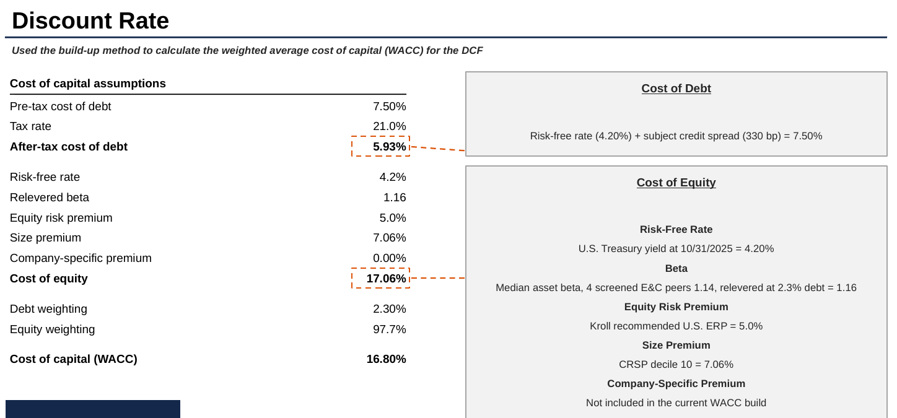

2026 Valuation Challenge.

We valued a Gulf Coast engineering contractor for an ESOP. I was responsible for the discount rate, the DCF, the LBO and the public comparables.
In short
- The question
- What is a $132MM revenue contractor worth to an ESOP?
- Data and method
- A 16.8 percent discount rate, a five year DCF, an LBO check, and public peers for beta only.
- What I found
- The two DCF methods landed within half a million dollars of each other. The LBO came close.
- What it means
- The size premium is the whole gap between public and private multiples, so public multiples got zero weight.
Six inputs and one big judgment
Risk free rate on the valuation date.
Beta from four clean peers, relevered.
Equity risk premium, Kroll.
Size premium, Kroll microcap decile. The biggest judgment.
Company specific premium. Those risks are in the forecast.
The WACC, 97.7 percent equity.

The slide as submittedMy discount rate page from the deck. The company, its figures and the conclusion stay off this site.

Without the size premium the implied multiple goes from about 5 times to about 10.
The competition
The competition is run out of Georgia State University. Round 1 is a recorded presentation of up to 25 minutes with no live questions, and the top five teams advance to the in person final. We submitted on October 19, 2026.
With no question period, every judgment has to hold up inside the video. Each of my four slides is built to answer the question a judge would otherwise ask.
My four slides
- Discount rate. What return does a buyer need to own this risk? I built the cost of capital in layers and landed at 16.8 percent.
- Discounted cash flow. What are the cash flows worth at that rate? A five year forecast to 2031, tested two ways, growing forever at 2 to 3 percent or selling at 4.5 to 5.5 times EBITDA. The two methods landed within half a million dollars of each other.
- Leveraged buyout. Could a real buyer pay that? I modeled a private equity purchase at 2.5 times EBITDA of debt, kept low because a bonded contractor cannot carry heavy leverage, and solved for the most a fund could pay at its target return. It landed close to the DCF, so the LBO became a floor and a check, with zero weight in the conclusion.
- Guideline public companies. What do public peers tell you? They tell you about risk. They tell you much less about price. I used the peer set for beta only. Companies worth $4.7 billion to $16.8 billion with hundreds of projects and liquid stock say little about a control sale of a private contractor with two owners, so their multiples carried zero weight.
Where I disagreed with management
Management projected revenue growth of 6.5 to 7.5 percent a year. The company had missed its own 2025 budget by 14 percent and new orders had been flat for two years. I accepted 2026 because backlog supported it, then faded growth to 2.5 percent by 2031. All of the difference between our value and management's case comes from that growth call. None of it is margins. The DCF runs on a 6.5 percent mid cycle margin, a normal year.
What I would do differently
- Four betas is thin. Four clean betas beat eleven noisy ones, but every reasonable change to the beta still kept the value inside our range, and I should have shown that range on the slide.
- The 10 year or the 20 year Treasury. Kroll pairs its 5 percent premium with the 20 year yield, which was 4.65 percent. Using it would have raised the WACC to about 17.2 percent and cut the value by about $1.4 million, still inside the range. I used 4.2 percent and should have footnoted the choice.
- Bonding caps leverage harder than I modeled. At 2.5 times EBITDA the contractor's tangible net worth goes negative, which a surety would not accept. A 1.5 times case changes the LBO ceiling by a few million and does not change the conclusion, but it is the more defensible figure.
Process
We held three mock presentations between September 18 and early October, froze the content on October 9 and recorded on October 10 and 11. My segment ran six minutes fifty in the second mock against a target of four and a half, so I spent the last two weeks cutting the script.
The company and the data room are confidential, so the dollar figures stay off this page. The method and the judgment calls are mine.